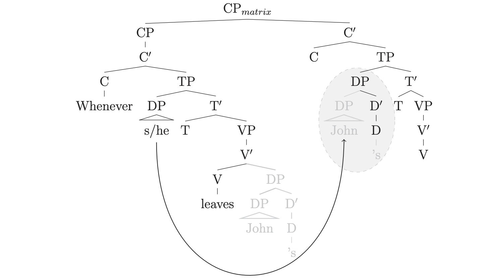
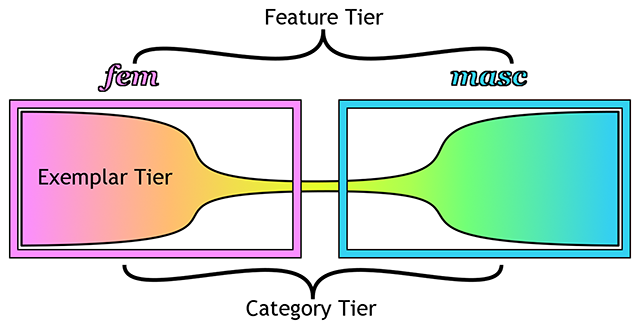
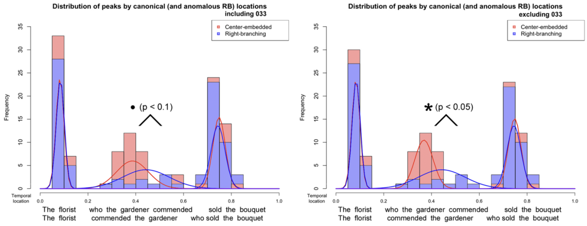

Research
My research program asks how the parser navigates and represents sentential structure in real time upon encountering an ambiguous string in the context of certain other linguistic and extra-linguistic information. In other words, how do we use contextual information or world knowledge during parsing?
Long-distance dependencies, ambiguity, and task-specific effects

Resumptive Pronouns | PhD dissertation
When the human sentence parser encounters the start of a long-distance dependency, such as a wh-word in a wh-filler-gap dependency, it is triggered to look for a resolution (e.g., the gap, trace, or extraction site). However, the material the parser encounters after beginning the forward search can affect where it looks for the resolving item/position, or what it accepts as a reasonable resolution. However, there are types of information that might change the parser’s behavior…
Ambiguity, in particular structural ambiguity, is at the core of research program. My overarching research goals are to identify and theoretically model the ways in which different sources of linguistic information influence how the parser copes with structural ambiguity. For instance, my dissertation (Ackerman 2015) shows that the parser does not seem to behave differently around verbs that have monotransitive versus intransitive frames while representing ambiguous structures. In fact, I conclude that the parser builds both (mono- and intransitive) structures simultaneously, and maintains them until the locally ambiguous string is disambiguating by newly encountered structure.
Generally, the syntax literature reports that resumptive pronouns (RPs) ameliorate the unacceptability of island violations, but much of the psycholinguistic literature has found RPs to be no more acceptable than straightforwardly island-violating gaps.
(1a.) * Which manᵢ did Jane say that [the parent who scolded ᵢ] forgave the babysitter’s mistake?
(1b.) ? Which manᵢ did Jane say that [the parent who scolded himᵢ] forgave the babysitter’s mistake?This is in spite of the fact that island production tasks consistently elicit RPs (e.g., Ferreira & Swets, 2005). However, prior psycholinguistic comprehension studies have typically compared RP and illicit gap conditions indirectly. Ackerman, Frazier and Yoshida (2018) posit that RP island amelioration during comprehension tasks is undetectable when subjects cannot engage in comparison of alternative sentences, and thus that the apparent production- comprehension split arises from methodological differences between perception and production experiments.
We find that the direct comparison of gap and RP alternatives consistently results in a significant preference for sentences with RPs within islands (but not outside islands). These results are confirmed in three different island types (relative clause islands, adjunct islands, and wh-islands) and in two different forced choice tasks (forced choice between two full-sentence alternatives and forced choice between two fill-in-the-blank alternatives).
Much of the syntax literature notes an amnestying effect of a third wh-word (the so-called “additional wh-effect” [Bolinger, 1978; Kayne, 1983]) in questions that violate the Superiority Condition [Chomsky, 1973], as in (1) [Kayne, 1983; Clifton, Faneslow & Frazier, 2006].
(1a.) * What did who buy there?
(1b.) ? What did who buy where?However, psycholinguistics studies have not supported this observation [Clifton, Faneslow & Frazier, 2006; Fedorenko & Gibson, 2010]. We ask if an additional wh-phrase can ever improve acceptability of multiple-wh-questions, and if so, when. We believe such a study will help to reveal how the constraints that operate during language processing influence the way grammatical violations are comprehended and judged.
(2) The maitre d' tried to figure out what who ordered.
(3) The maitre d' tried to figure out what who served to whom.Fedorenko & Gibson [2010] observe that the acceptability of (2), which has a monotransitive verb and two wh-phrases, is indistinguishable from (3), which has a ditransitive verb and three wh-phrases. However, [6] suggests, through an informal acceptability judgment, that the additional wh-effect is apparent in (4), in which only ditransitive verbs are compared.
(4a.) ? You know perfectly well where who put what.
(4b.) * You know perfectly well where who put it.My research on this topic reveals that the transitivity of the verb in question (e.g., ditransitive ‘put’ or monotransitive ‘buy’) and the lexical status of the additional item (e.g., a wh-word like ‘where’ or a pro-form like ‘there’) influence the change in acceptability between conditions.
References
- Ackerman, L., M. Frazier, & M. Yoshida. (2018). Resumptive Pronouns Can Ameliorate Illicit Island Extractions. Linguistic Inquiry, Vol. 49 (4), 847–859. DOI: 10.1162/ling_a_00291
- Ackerman, L. & M. Yoshida. (2016). Three wh-words are better than two (when violating the Superiority Condition). The 29th Annual Conference On Human Sentence Processing (CUNY16) – University of Florida, FL (March 2016). Poster, Abstract
- Ackerman, L. (2015). Influences on parsing ambiguity. PhD dissertation, Northwestern University. Open access at Proquest
Gender and categories

In coreference resolution between a pronoun and a name, there is often an assumption that gender is a formal feature of the [English] word, thus is processed with other lexical/grammatical features. Furthermore, there is an increase in recognition of nonbinary genders and nonbinary pronouns, including ‘neopronouns’. It is not clear how one’s exposure to nonbinary genders and neopronouns use will influence real-time, early long-distance dependency formation. On one hand, pronouns are a conservative word class in English, so it may be difficult to influence ingrained processing behavior associated with coreference dependency formation. On the other hand, meaningful and consistent exposure to people with non-binary genders and people who use neopronouns may be sufficient to influence the lexical category and the way in which the earliest stages syntactic representation are built (Ackerman 2018, 2017). I’ve also published a programmatic paper that describes how I suggest researchers approach questions concerning the human gender space and how we talk about human gender, explicitly and implicitly (Ackerman 2019).
As a spin-off of this topic, I am also examining the possibility of a multidimensional “gender space” in which gender identities and personal names might be mapped. The objective of this is to provide more accurate and inclusive tools to researchers looking to examine the effects of linguistic behavior as a function of gender identity (e.g., one’s own identity or the encoding of another individual’s identity).
References
- Ackerman, L., (2019) “Syntactic and cognitive issues in investigating gendered coreference”, Glossa: A Journal of General Linguistics 4(1): 117. DOI: https://doi.org/10.5334/gjgl.721
- Ackerman, L. (2018). Processing singular they with generic and specific antecedents. Architectures and Mechanisms of Language Processing (AMLaP 2018) – Berlin (September 2018). OSF: https://osf.io/ztrsy
- Ackerman, L., N. Riches & J. Wallenberg. (2017). The ambiguity of natural gender in coreference dependency formation. Architectures and Mechanisms of Language Processing (AMLaP 2017) – Lancaster University (September 2017). OSF: https://osf.io/vwj8p
Prosody and syntax

Prosodic boundaries may indicate syntactic constituent boundaries, but they are produced with high variability depending on many complex factors. When we speak out of breath, or if we shout across a loud room, or when we’re uncertain, or in a brainfog, or reading, or if we have a speech or language impairment… those boundaries may not occur in the most informative locations. How hard is it to accommodate these anomalous productions? If we’re expecting anomalous prosodic boundaries, do we use prosodic information in the same way as if we’re expecting typical or syntactically informative prosodic boundaries?
It is not clear whether or not the parser will use such information in its initial representations. If the parser only takes prosodic boundaries into account when other information has already been processed, then unusual or inconsistent prosodic boundaries in structurally ambiguous sentences won’t change the parser’s behavior while it builds an initial representation of a sentence. However, if the parser uses prosodic information early on to determine syntactic constituents, then unusual or inconsistent prosodic boundaries could confuse or mislead the parser and create notable slow-downs associated with garden-path effects.
References
- Ackerman, L., M. Yoshida, & J. Pierrehumbert. (2011). Prosodic structure of center-embedded sentences. The 24th Annual Conference On Human Sentence Processing (CUNY2011) – Stanford University, Palo Alto, CA (March 2011). Poster: PDF